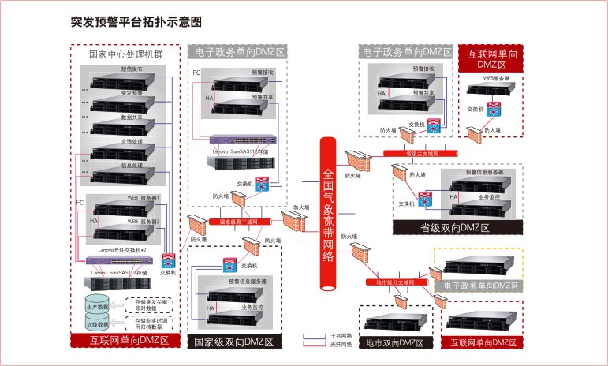

国家气象局突发公共事件预警信息发布系统项目，是国家突发公共事件应急体系的重要组成部分，实现对自然灾害、事故灾难、公共卫生事件、社会安全事件四大类突发公共事件信息的接收、处理和及时发布，使突发公共事件预警信息公众覆盖率达到82%以上，公众在系统发出灾害预警信息后10分钟之内接收到预警信息。
这一预警信息发布系统将建设国家级、省级、地市级、县级四级预警信息发布平台，并实现各级气象部门与同级政府、相关部门突发公共事件应急指挥平台的连接，实现多部门突发事件预警信息的统一收集、管理和发布。
突发公共事件预警信息发布平台主要依附在原有国家气象专网；在各地省、市DMZ区分别建立分中心，整体拓扑如下： 
国家突发公共事件预警信息发布系统具体内容包括：1个国家突发公共事件预警信息发布中心，31个省级突发公共事件预警信息发布分中心，342个地市级突发公共事件预警信息发布分中心，以及2379个县级突发公共事件预警信息发布分中心；预警信息的多种发布技术手段是在各级气象机构已有的气象灾害预警发布手段的基础上予以扩充和改造，使其能适应突发公共事件的预警信息发布；预警信息接收、传输是在原有气象通信网络的基础上予以扩充。
系统分为三大部份：国家突发公共事件预警信息发布中心、省级突发公共事件预警信息发布分中心、地市级突发公共事件预警信 息发布分中心，具体设计如下：
突发公共事件预警信息发布国家中心、省级分中心、地市分中心分别采用联想最新一代服务器产品联想ThinkServer RD630服务器；RD630可搭载两颗英特尔® 最新Romley平台的至强TM E5-2600系列高端两路处理器，最高可达16颗处理核心，足以满足突 发公共事件预警信息发布平台对CPU的扩展需要，本项目选用性价比较高的E5-2620六核CPU。除此之外RD630还拥有20 DIMM 高达640GB内存，本次配置16GB(国家、省)/8GB(地市)，最大24TB的存储容量，可满足气象局突发公共事件应用对于系 统性能 的整体要求。
联想ThinkServer RD630服务器除了拥有优异的性能之外，凭借业界一流的SpecPower成绩，以及软硬结合的能效管理系统，将成为国家气象局IT基础设施能效优化的有力功臣，大幅节省电能消耗。
基于突发公共事件预警信息发布平台分散在全国各地市，联想ThinkServer RD630服务器提供了完善的软件系统：可通过EasyStartup帮助气象局快速部署；通过EasyManage随时随地全面掌控全国系统平台的运行情况；通过EasyUpgrade实现固件便捷升级；通过SmartGrid可实现能效管控。
除此之外基于对平台的安全性、稳定性考虑，给国家级、省级配备了联想SureSAS112光纤存储，通过该存储实现数据的集中存 储，其中存储又分为实时即时事件数据区、非实时数据归档区，同时借助于存储实现发布平台的HA功能。
联想根据突发公共事件预警信息发布平台的整体需求推荐配置如下：